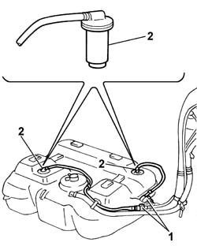

1080E13 float valve (one) (preventing fuel emerging from tank) - r+r
- Path
- Procedures > 10 ENGINE > 1080 EMISSION CONTROL SYSTEM > 1080E EVAPORATION CONTROL SYSTEM > 1080E13 float valve (one) (preventing fuel emerging from tank) - r+r
- Kind
- repair procedure (removal / refitting; the operation number is the code)
- Applies to
- engines: 1.2 8v, 1.4 8v, 1.6 16v; all production periods
- Interactive page
- https://sloeber94.github.io/elrnDB-fDbl/en/#/2584278
Applies to: engines: 1.2 8v; all production periods
 Removing
Removing
 Refitting
RefittingDisconnect the battery negative terminal.
Op. 7055B43 REAR WHEEL ARCH LINER (ONE) LEFT OR RIGHT - R.R.
1. Disconnect the pipes connected to the fuel vapour separator from the rapid connectors.
Release the pipes from the bands on the tank.
2. Undo and remove the two float valves, complete with pipes.

Applies to: engines: 1.2 8v; all production periods
Refitting
RemovingFit the float valves and pipes.
Connect the rapid connectors for the pipes connected to the fuel vapour separator.
Fasten the pipes to the bands on the tank.
Op. 7055B43 REAR WHEEL ARCH LINER (ONE) LEFT OR RIGHT - R.R.
Connect the battery negative terminal.
Applies to: engines: 1.4 8v, 1.6 16v; all production periods
Removing
RefittingDisconnect the battery negative terminal.
Op. 7055B43 REAR WHEEL ARCH LINER (ONE) LEFT OR RIGHT - R.R.
Op. 1040A10 FUEL TANK - R + R AND DECANT FUEL
1. Disconnect the pipes connected to the fuel vapour separator from the rapid connectors.
Release the pipes from the bands on the tank.
2. Undo and remove the two float valves, complete with pipes.
Applies to: engines: 1.4 8v, 1.6 16v; all production periods
Refitting
RemovingFit the float valves and pipes.
Connect the rapid connectors for the pipes connected to the fuel vapour separator.
Fasten the pipes to the bands on the tank.
Op. 1040A10 FUEL TANK - R + R AND DECANT FUEL
Op. 7055B43 REAR WHEEL ARCH LINER (ONE) LEFT OR RIGHT - R.R.
Connect the battery negative terminal.